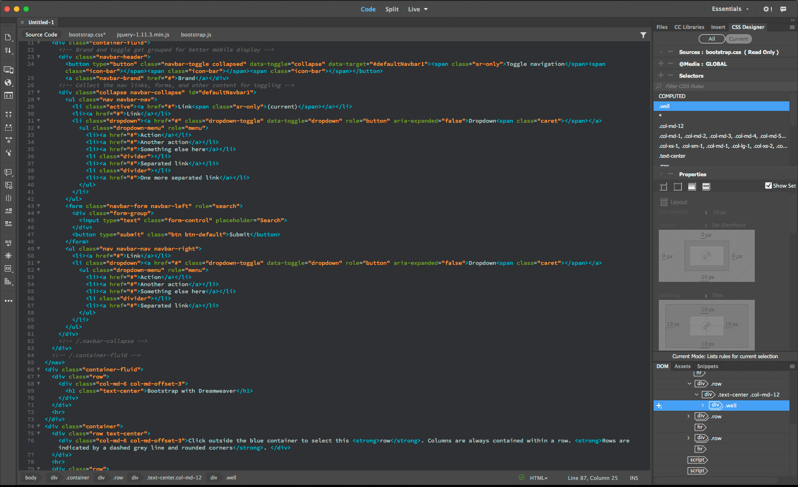
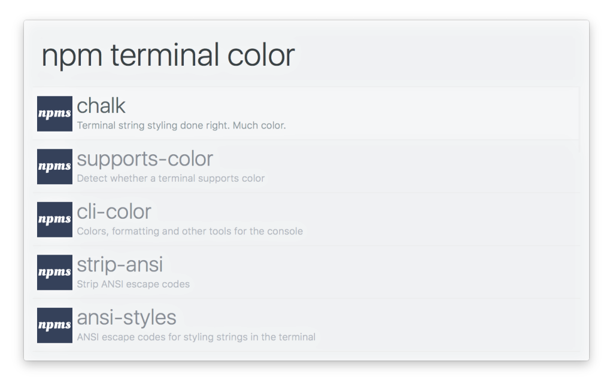
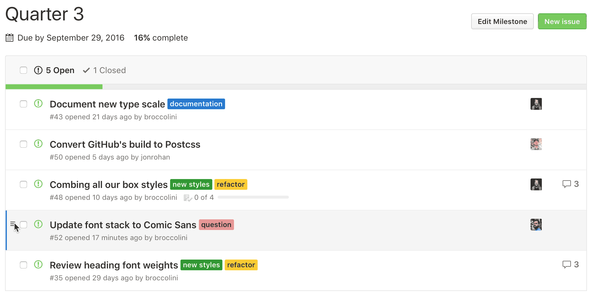
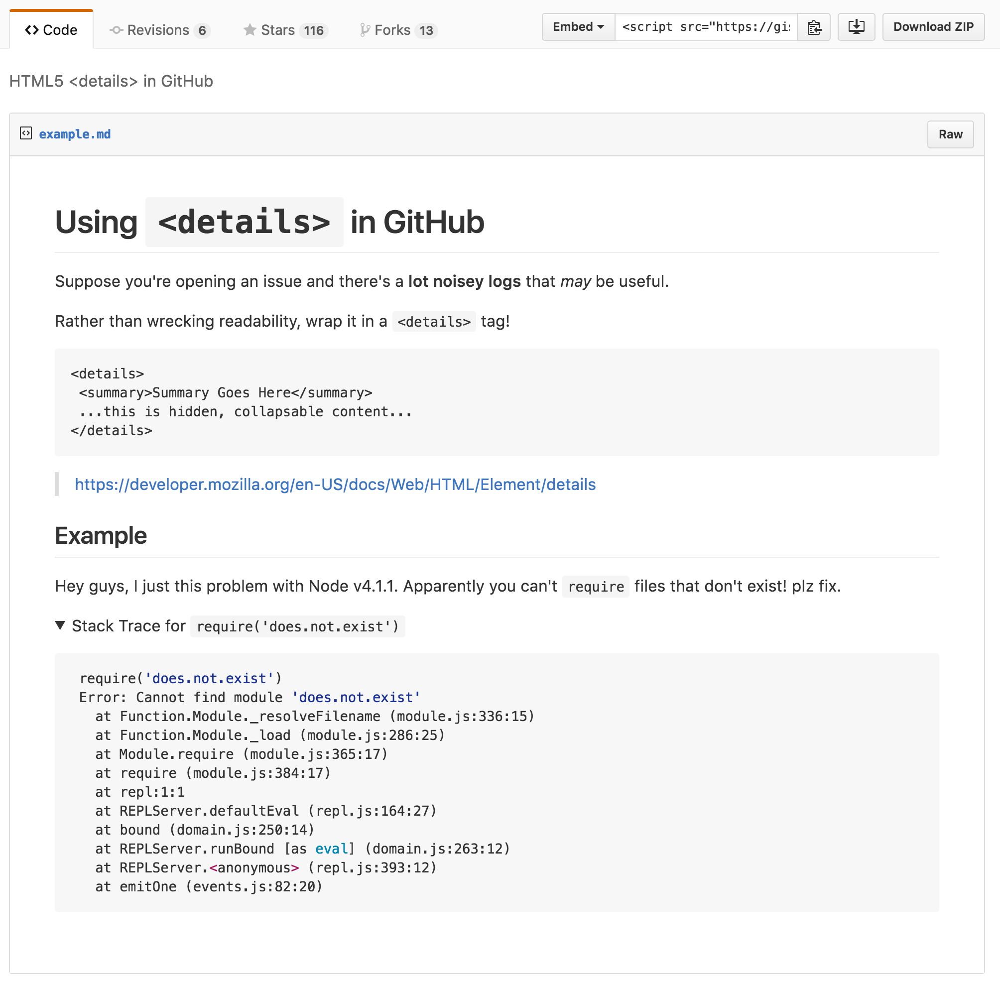
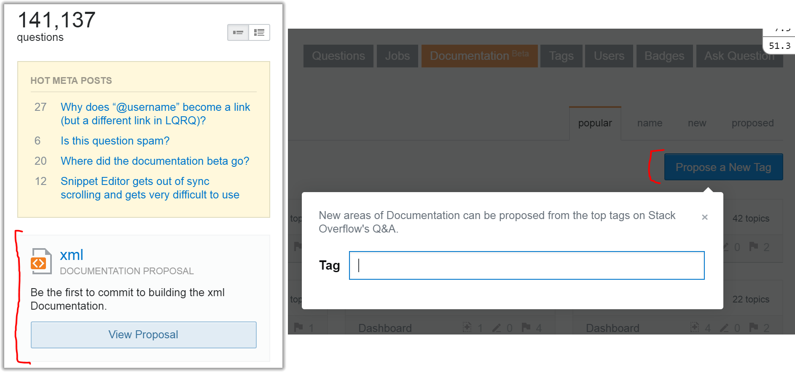

Browser Pop Quiz
Last version check — June 22, 2016:
51
38
47
14342
9.1
Browser Pop Quiz
Last version check — June 22, 2016:
51
52
38
47
14342
14372
9.1
Chrome 52
Mostly the same as last month:
- CSS Containment
- PerformanceObserver API
- Service Worker Request Streaming
- VAPID Support
Chrome 52 continued...
- Fetch API: Response Construction via ReadableStream
- Pointer Events: Unified Input API
- Async/await functions
- Shadow DOM v1 Editors Draft Implementation
Edge 14372
- Swipe Navigation: Forward/Backward
- H264/AVC Decoding via ORTC API
- Web Notifications API Enabled by Default
- Beacon Interface Enabled by Default
- Fetch API Enabled by Default
Notable Releases
D3 v4.0
- 4,838 commits
- Better opacity support (colors)
- Shapes & Layouts rendering to canvas
- Lots of new stuff.
Progressive Web Apps
What are PWA's?
A Progressive Web App uses modern web capabilities to deliver an app-like user experience.
- From Web -» Native App (App Shell)
- No Installation (Automatic)
- Dependent on Service Workers

Network Management
Powerful new browser capabilities shift network/traffic control to the frontend developer.
- Power API's
- SSL Requirements
- Service Workers
- WebRTC
- Preconnect, Predns, Preload, etc.
- -First (Mobile, Offline, API, etc)
- Protocol Overload: SPDY -» HTTP2 -» QUIC
and many, many more...
ECOMP
AT&T contributed ECOMP to the Linux Foundation (8.5M LOC).
- The de-facto standard for SDN?
- Bypass traditional networking hardware.
- Big Biz Strategy? Cisco just bought Tail-f for $175M.
Tail-f = 1 of 6 AT&T Domain 2.0 vendors
SDN = Software Defined Network
SDN's separate traffic flow (control plane) from the underlying system (data plane).
New Dreamweaver

Side Note: Brackets is not dead.
Alfred + npm

Git Ordered

Git Detailed

Stack Overflow

Documentation beta is going public (any minute now)
GIF Pronounced "JIF"
Creator of the .gif format, Steve White, says it's pronounced "Jif".
He's also annoyed people have been saying it wrong.
Thanks!